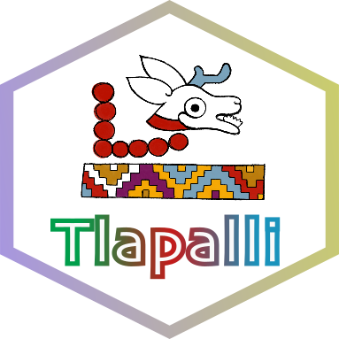
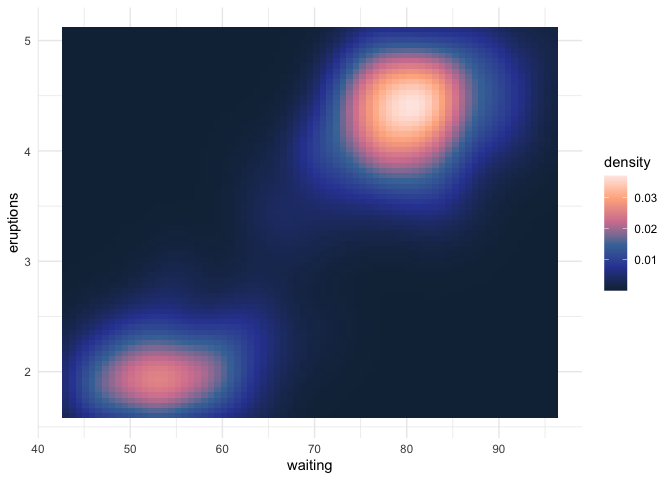
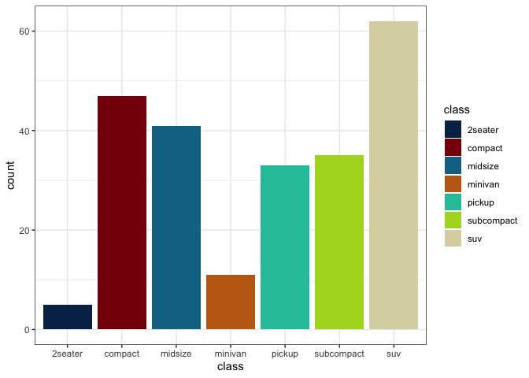
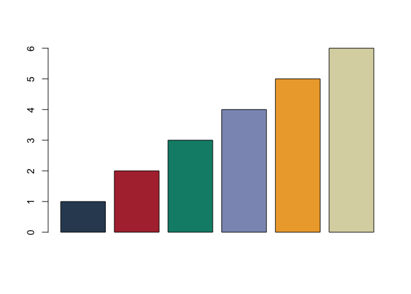
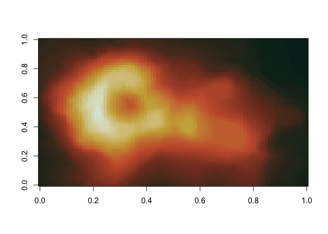
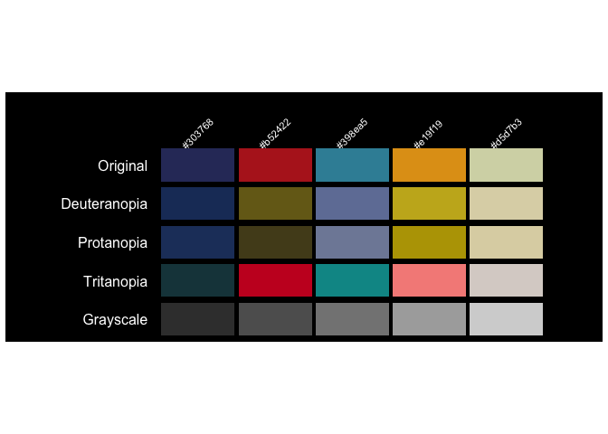
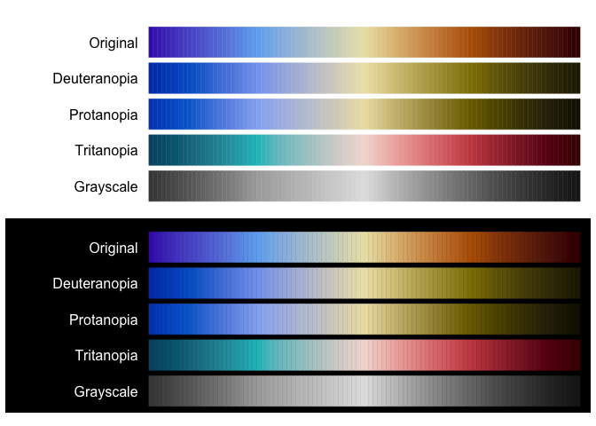

{ Tlapalli }
In tlilli, in tlapalli
Disponible en:

R color palettes inspired by elements of Mexican and Mesoamerican culture. All palettes were designed with different ways of perceiving color in mind. This is a small personal project, so for now it is only available to install from GitHub. The package currently has 27 palettes, available as both discrete and continuous scales, and I hope be adding more over time. Suggestions are welcome and appreciated (҂◡_◡) ᕤ !
Installation
install.packages(c("remotes"))
remotes::install_github("mariameraz/tlapalli")Palettes
Example
Basic examples of how to use our color palettes:
library(tlapalli)
library(ggplot2)
# List available palettes
names(tlapalli)
#> [1] "Altata" "DiaDeMuertos" "LosTemerarios" "Atlas"
#> [5] "Duvalin" "Tecate" "LosTemerarios2" "Alicante"
#> [9] "Jade" "Obsidiana" "Ambar" "Cempasuchil"
#> [13] "Mazatlan" "Atlas2" "CartaBlanca" "PacificoClara"
#> [17] "PacificoLight" "PacificoSuave" "Conchas" "Venado8"
#> [21] "Coqueta" "Quetzal" "Ofrenda" "Cosecha"
#> [25] "Valle"
# Get the colors of a palette
tlapalli_pal("Ambar")
#> [1] "#06291f" "#7d3a26" "#c95d39" "#ccad46" "#dce9dd"
# Interpolate colors to get a palette with 10 colors
tlapalli_pal("Ambar", n = 10, type = "continuous")
#> [1] "#06281F" "#413322" "#703925" "#95452C" "#B75434" "#CA703B" "#CC9341"
#> [8] "#CFB357" "#D9CD9A" "#DCE9DD"
# Continuous scale in ggplot2
ggplot(faithfuld, aes(waiting, eruptions, fill = density)) +
geom_tile() +
scale_fill_tlapalli_c("Atlas2") +
theme_minimal()

# Discrete scale in ggplot2
ggplot(mpg, aes(class, fill = class)) +
geom_bar() +
scale_fill_tlapalli_d("Quetzal") +
theme_bw()

# Discrete palette in base R
barplot(1:6, col = tlapalli_pal("PacificoSuave"))

# Continuous palette in base R
image(volcano, col = tlapalli_pal("Ambar", n = 100, type = "continuous"))

# Show color palettes
tlapalli_show("Venado8", background = "black")

tlapalli_show("Altata", n = 100, type = "continuous", background = "both")
